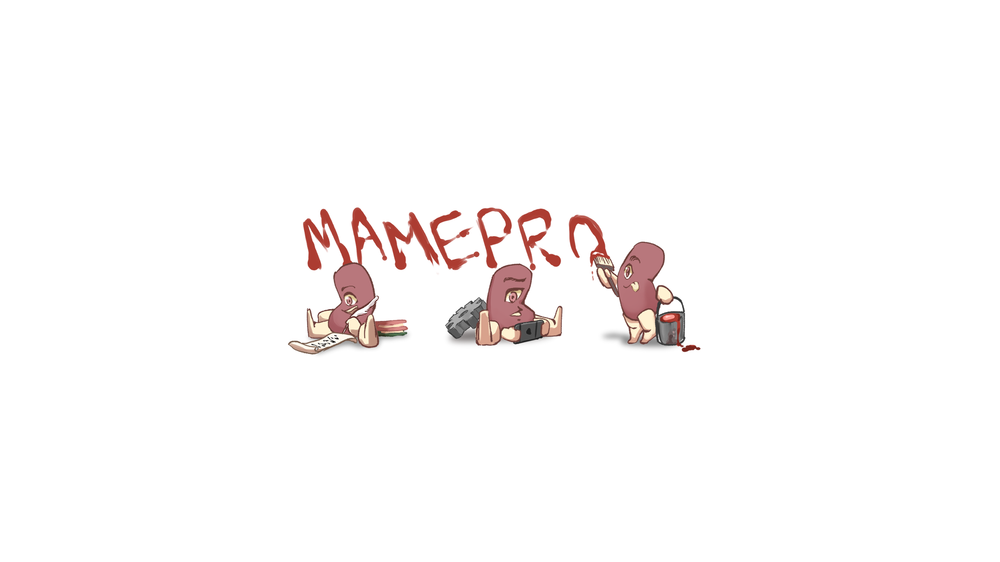
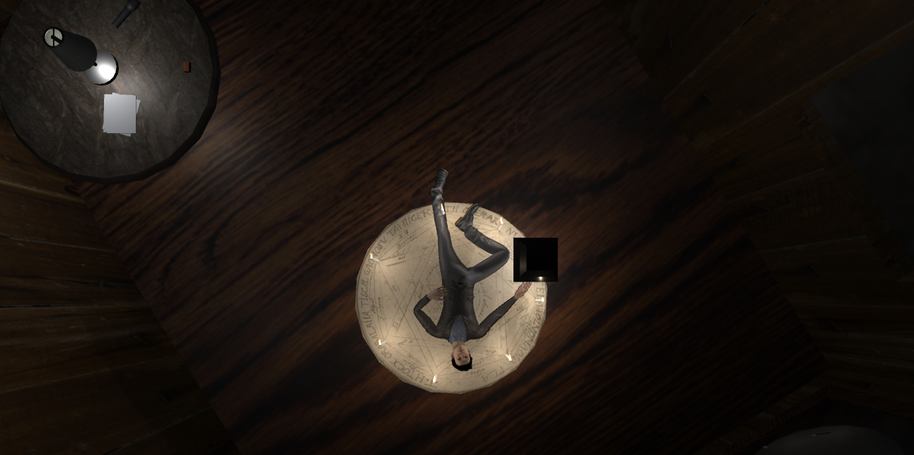
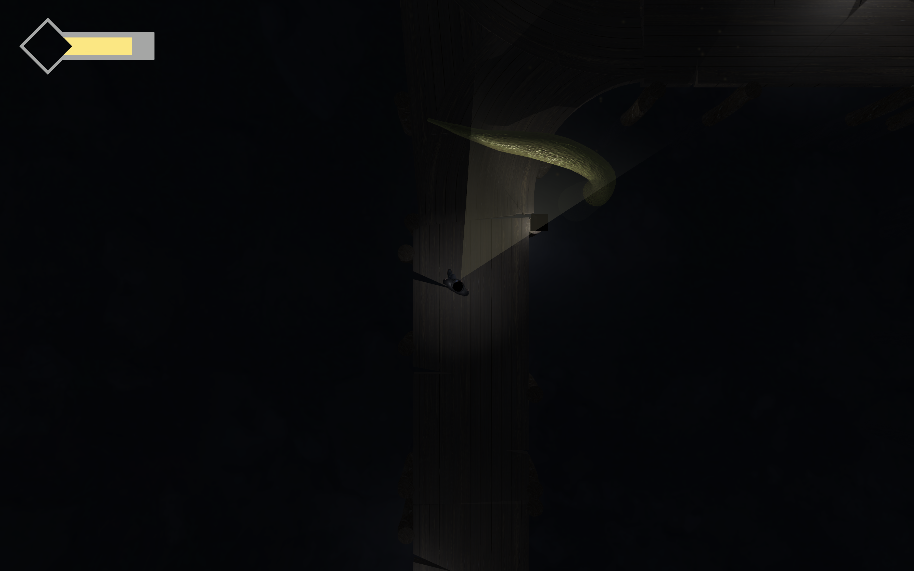
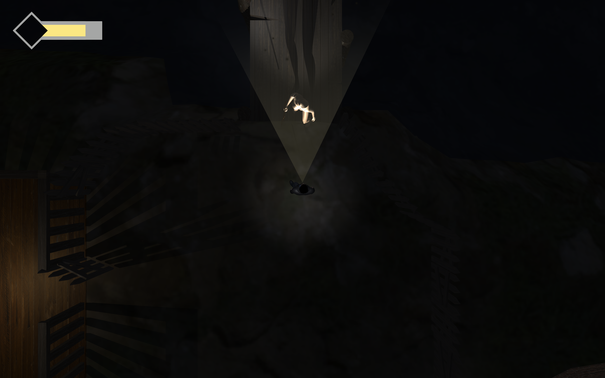
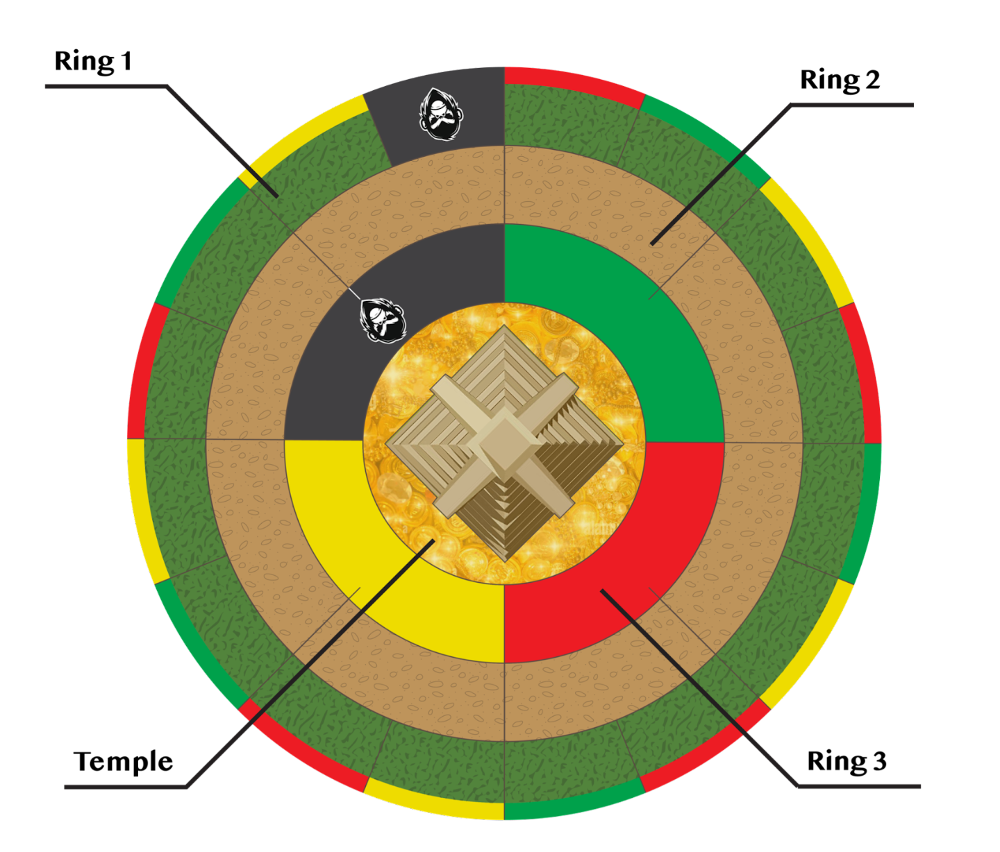

Game Portfolio
Selected game and design projects.
A compact showcase of shipped Steam projects, indie studio work, gameplay engineering, AI behavior systems, narrative implementation, prototypes, and design documentation.
Featured work includes DuoQ, Richard, [ VOID ], Touhou: 7 Colored Qualia, Umbral Island, Minnesota Jones, Fox Hunt, and Pipe Wars.
Computer Science (Games) undergraduate work from USC, including rapid prototyping, production cycles, interaction design, and board game design.
Indie Studio
Mame Production
A small independent studio I formed with friends to build fan games and original projects through tight-scoped production cycles.


Founder / Developer
Unity
Small Team Production
Building compact games with fast iteration and clear scope
Mame Production gives me a place to own more of the development process: planning scope with a small team, building gameplay systems, coordinating releases, and carrying projects beyond the first jam build.
Touhou: 7 Colored Qualia
A Windows/macOS Unity fan game made for Touhou Fan Game Jam 16, later expanded into a complete post-jam version with story progression, achievements, and 8 minigames across 8 locations.
- Jam-to-release production
- Multi-minigame gameplay structure
- Story progression and achievement-driven unlocks
Unannounced Mame Production project
Currently developing the studio's next game with the same small-team approach: define a playable core early, build reusable systems where they matter, and keep scope realistic enough to finish.
- Early prototype development
- Gameplay systems planning
- Team coordination and production ownership
Featured Steam Projects
Shipped gameplay engineering work
Larger team projects where my work focused on player-facing systems, implementation quality, and making authored design feel reliable in-game.

Gameplay Engineer
Released on Steam
DuoQ
Built and refined core gameplay mechanics for a single-player game framed around co-op FPS interactions, voice-driven communication, puzzle solving, and enemy encounters.
My work centered on turning design intent into responsive playable systems, then profiling and optimizing those systems so the experience stayed smooth under gameplay load.
- Core gameplay mechanic implementation
- Performance profiling and optimization
- Player-facing systems polish and iteration

Gameplay Engineer
Narrative Systems
Richard
Implemented narrative content and gameplay features for a Shakespeare-inspired social simulation game built around conversations, trust, character knowledge, and dialogue choices.
I connected authored story material to interactive dialogue flows, helping narrative beats trigger cleanly through gameplay while keeping player choices readable and consistent.
- Dialogue and narrative implementation
- Interactable conversation feature work
- Design-to-engineering integration for story content
![[ VOID ] Steam capsule art](https://shared.akamai.steamstatic.com/store_item_assets/steam/apps/3655010/d20f5e77c8d45c9c2c7ab2dd30c1f0993af0a264/capsule_616x353.jpg)
Creature AI Engineer
Behavior Systems
[ VOID ]
Programmed creature behavior AI for a game centered on encounters with distinct entities, focusing on how creatures perceive, react, and interact with the player and environment.
My role required translating encounter design into maintainable behavior logic, giving each creature readable patterns while preserving tension, surprise, and systemic consistency.
- Creature AI behavior implementation
- State-driven interaction and response logic
- Gameplay tuning for readable enemy behavior
Production Project
Umbral Island

Partner with one other person to go through the full production cycle to create one game.
A top-down horror maze crawler where the player explores a night town with limited vision, avoids cultists, solves puzzles, and searches for a way to escape.
- Team
- 2 + 5
- Timeline
- 1 semester
- Status
- Beta stage
- Main Role
- Dialogue and interaction framework, 3D modeling and animation, UI/UX




System and Board Game Design
Design Projects
A set of short tabletop design exercises focused on prompts, mechanics, iteration, and final rule documentation.

3 weeks / Team of 4
Minnesota Jones
Prompt: Design a board game using the classic board game Down the River as prior art.
A jungle adventure game where 4 players race to compete to enter the temple in the center.
3 weeks / Team of 4
Fox Hunt
Prompt: Design a board game with randomly selected mechanics: 1v1 dynamic, auctioning, chase, player as animals.
A card-based grid movement board game where players bid against each other for movement cards before trying to evade or hunt each other.
4 weeks / Team of 4
Pipe Wars
Prompt: Design a board game. No restrictions.
A 4-player physical board game where players play twister with their fingers while trying to fix and maintain leaking water pipes.